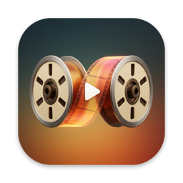

Support
Yestermix for Mac
Contact
Email hellolpworks@gmail.com. Please include your Mac model, macOS version and what happened. We usually reply within a few days.
I bought the Unlock but the mark is still there
Choose Yestermix > Restore Purchase in the menu bar (it's also in the Unlock window). Make sure you're signed in to the App Store with the same Apple Account you used to buy it. The Unlock works on every Mac signed in to that account.
Refunds
Apple handles all payments and refunds. Request one at reportaproblem.apple.com.
Some photos from last time didn't come back
Yestermix uses your photos where they are and doesn't copy them. If a file was moved to another disk, renamed in a way macOS can't follow, deleted, or is on a drive that isn't connected, add it again with File > Add Files. Photos you picked from the Photos app are kept by Yestermix and always come back.
Save to Photos says it isn't allowed
Open System Settings > Privacy & Security > Photos and turn on Yestermix. It only asks to add videos; it can't see your library.
My TV or PC won't play the 4K video
Turn off Smaller 4K file (HEVC) under Quality and export again. The standard 4K file (H.264) plays almost everywhere.
Using the included songs
The songs that come with Yestermix are free to use under Creative Commons Attribution. When you post a video with one, paste the music credit under it: after an export, click Copy Music Credit.
What do I need?
A Mac with Apple silicon (M1 or later) running macOS 27 or later.
Saving your work
Yestermix remembers your last slideshow when you quit. To keep several, use File > Save Project; projects are .yestermix files you can double-click to open.